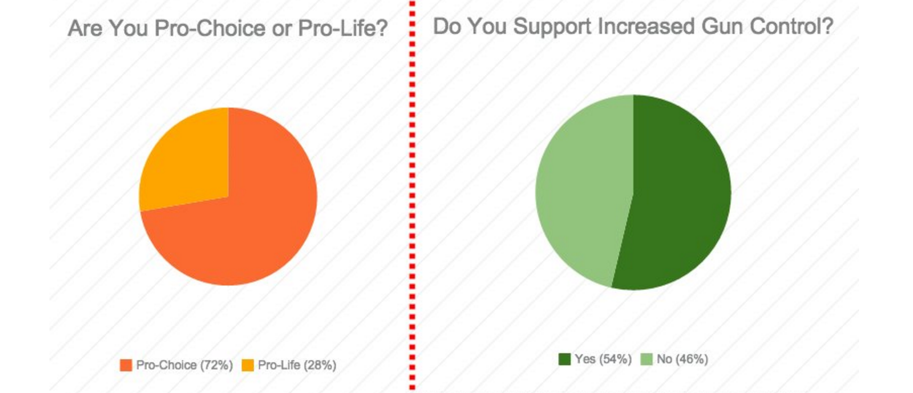
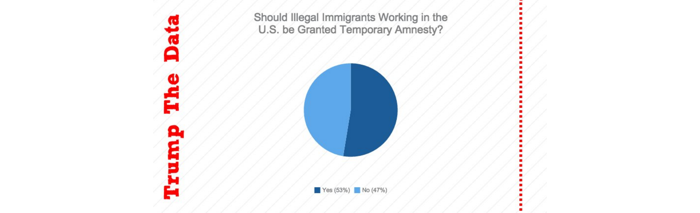

NORTHEASTERN POPULAR OPINION
Our poll research and twitter data suggests that Northeastern States are more liberal - Support Immigration and are Pro-Choice
The Northeastern United States is composed of nine states: Connecticut, Maine, Massachusetts, New Hampshire, New Jersey, New York, Pennsylvania, Rhode Island, and Vermont. Since 1992, the Northeast has consistently voted Democrat in the General Election.1 Today, 46.41% identify or lean Democrat, compared to the national average of 39.6% that identify as or lean Democrat. Conversely, only 34.54% of Northeasterners identify as or lean Republican, compared to the national average of 42.7%.2
On abortion, the Northeast strongly identifies as pro-choice. According to isidewith.com, 72.33% of those polled from these states are pro-choice.3 Specifically, New England residents (those from CT, MA, ME, NH, RI, and VT) are the strongest supporters of legalized abortion in the country, with 75% saying abortion should be legal in all or most cases.4 Trump’s position on abortion has wavered over the years, although today he characterizes himself as pro-life.5 His desire to defund Planned Parenthood will most likely be met with resistance among Northeastern voters, creating a large obstacle in his path to court voters in these states.
On immigration, 61.43% of Northeasterners believe that children of illegal immigrants should be granted citizenship.6 This is in stark contrast to Donald Trump’s immigration policy proposal released in August, which not only set a goal of deporting the 11 million illegal immigrants in the U.S., but also end the U.S.’s birthright citizenship policy, which guarantees citizenship to anyone born in the United States under the 14th amendment.7 Like abortion, the Northeast’s liberal attitude on immigration reform and, specifically, the birthright of children born to illegal immigrant, will make it difficult for Trump to court voters in these states. Many, including the Washington Post, have even called his rhetoric on illegal immigrants “bigoted” and “racist.”8
On gun control, the Northeast is somewhat more neutral, with 53.67% of those polled by isidewith.com stating a belief in increased gun control.9 Pew’s polls of the Northeast reveals that 37% of Northeasterners support gun rights, while 59% are for gun control.10
Donald Trump unequivocally supports the Second Amendment, but his desire to fix the current background check system by making sure accurate criminal and mental health records are kept may appeal to the more liberal Northeast. His desire to “fix our broken mental health system” will also appeal to this region, likely making his gun stance less of a hindrance in gaining Northeastern support than his strong conservative views on immigration and abortion.